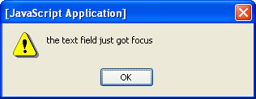

<script> tag, which can be located in either the <head> tag or the <body> tag. Use the Script component to add JavaScript to your page. The Script component  is a standard HTML
is a standard HTML <script> tag, which can be located in either the <head> tag or the <body> tag. Use the Script component to add JavaScript to your page.
When you drop this component on a page in the Visual Designer, it is inserted into the <head> tag. The component is not rendered on the page, but you can see it under the head1 node in the
If you want the <script> tag in the <body> instead, you can drag the script node in the Navigator window from the head node to the body node.
<head> tag to the <body> tag, open the JSP editor and make sure that the Script component is positioned in the JSP code prior to any components that use it. If necessary, cut and paste the Script component to move it. You can use this tag either to point to a JavaScript file or to specify JavaScript code directly, as described below:
url property in the component's Properties window.
<ui:script binding="#{Page1.script1}" id="script1"/>
To add JavaScript code, you must change the tag into a beginning and ending <ui:script> tag and put the code between the tags. For example:
<ui:script binding="#{Page1.script1}" id="script1">
function foo(text) {
alert(text);
}
</ui:script>
To use the script above, you might call the foo() function in one of the JavaScript properties of another component. For example, you could add a Text Field component to the page and set its OnFocus property to the following text:
foo('the text field just got focus'};
When you run the application and click the text field in the browser, you see an alert box similar to the following one:

For more information on the HTML <script> tag, see the following W3C web page: